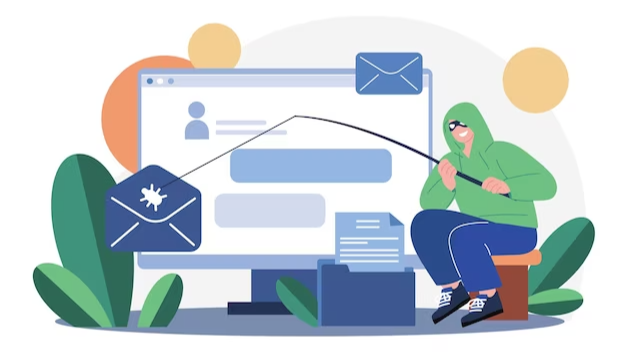
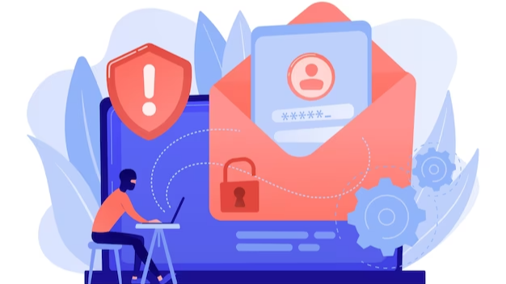

In today's digital age, phishing attacks have become increasingly common and sophisticated. Phishing attacks are a type of scam in which cybercriminals try to trick you into giving away your personal information, such as your passwords, credit card details, or other sensitive data. These attacks can be devastating, leading to identity theft, financial loss, and other serious consequences.
Therefore, it is critical to take the necessary steps to protect yourself against phishing attacks. In this blog post, we will discuss some essential steps you can take to safeguard yourself against phishing attacks and prevent cybercriminals from stealing your information. From recognizing and reporting suspicious emails to using two-factor authentication and keeping your software up to date, we will cover everything you need to know to protect yourself from these attacks.
By following these steps, you can minimize your risk of falling victim to phishing attacks and keep your information safe. So, let's get started and take the necessary steps to stay safe in the digital world.
Following these steps can help safeguard your online security and personal information against the significant threat of phishing attacks. If you are interested in what is phishing, go to phishprotection.com.

Be careful when receiving emails, text messages, or instant messages, particularly from unknown or doubtful sources. Be on the lookout for phishing indicators like typos and grammatical mistakes, or inquiries for personal data.
To ensure safety, always confirm the authenticity of the sender before sharing any sensitive details. Verify the email address, domain, or contact information against the official website or organization. Stay cautious of links and attachments as they might lead to harmful websites or malware.
To stay safe, it's best to refrain from clicking on links in emails, messages, or pop-up windows that seem suspicious or unexpected. Rather, hover your mouse over the link to check the URL and confirm if it corresponds to the official website.
It is important to generate robust passwords for your online accounts and refrain from using the same password for different platforms. Utilize a mix of uppercase and lowercase letters, numbers, and special characters. To ensure the safety of your passwords, contemplate using a password manager to create and store intricate passwords.
To provide additional security, MFA necessitates an extra verification step, such as a fingerprint scan, SMS code, or authentication app, in addition to your password. It is recommended to activate MFA whenever feasible, particularly for important accounts like email, banking, and social media.
To guarantee that you are safeguarded against known vulnerabilities, it is important to keep your operating system, web browsers, antivirus software, and other applications up to date with the latest security patches.
Exercise caution when sharing information on social media sites. Refrain from posting sensitive personal information, including your complete address, telephone number, or financial data, as this information can be utilized by attackers in phishing scams.

Keep yourself updated on the most recent phishing methods and fraudulent activities. Get to know the typical signs of phishing and acquire the skills to distinguish dubious emails, websites, and messages. Numerous institutions provide cybersecurity awareness training and materials.
In case you come across a suspicious website or receive a phishing email, make sure to report it to the relevant organization. Both email providers and web browsers offer ways to report such attempts. Reporting is crucial in safeguarding others from being targeted by the same attack.
Take advantage of the email filters and anti-phishing software offered by your email provider or security program. These resources can assist in recognizing and preventing fraudulent emails and websites, adding an extra level of security.
To sum up, phishing attacks are a growing threat that can compromise your personal data, finances, and even your identity. It's essential to take proactive steps to protect yourself against these types of attacks. By following the steps outlined in this post, such as being cautious of unsolicited emails and messages, using two-factor authentication, and keeping your software up-to-date, you can significantly reduce your risk of falling victim to a phishing scam.